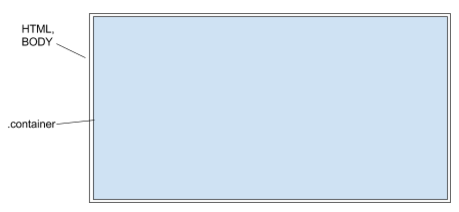
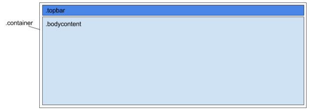

1. Container
In general, all body content must be placed inside .container.

Inside .container, there contains a permanent top bar, and body content area, where all body content should be placed inside.

In general, all body content must be placed inside .container.
Inside .container, there contains a permanent top bar, and body content area, where all body content should be placed inside.
The top bar is used for branding, navigation, search and other actions. The background color of the top bar should reflect the current tool. It should not scroll with the body.
In top bar, all icons, and logo should be the same color/background color on idle state. A different color can be applied when they are on active state such as mouse over, clicked, etc. (App’s branding color is recommended).
In top bar, all icons, and logo should be the same color/background color on idle state. A different color can be applied when they are on active state such as mouse over, clicked, etc. (App’s branding color is recommended).
The logo in the top bar is the current tool’s logo.
Depending on app’s requirement, global tools may contain search tool, current user, local clock, and app notifications.
Title section is the first element inside the the body content area. It used for describe the current page, and provide some general control to the page. The background color of the title section should be the same as top bar. And it should be connected to the top bar as well. Unless you have a good reason, otherwise every page should have a title section.
In title section, all icons, and texts should be white color. A different color can be applied when they are on active state such as mouse over, clicked, etc.

The content section holds the main content of a page. The content section contains many sub sections, such as articles, tables, etc. In coding, each section should be placed into a div tag or section tag. If it is in a div tag, then we should also assign a .section class to that div to indicate it is a section. We strongly recommend section tag, since most browsers fully support that element.
Depends on the content, a section may contain a section head, a section body, and a section footer.
A section can be nested into another section, which means you can put as many as you want in one section. However, nesting sections is not recommended because it adds complications to the page, and most oftenly it requires custom styling to make it work. We will discuss custom styling in the another document.